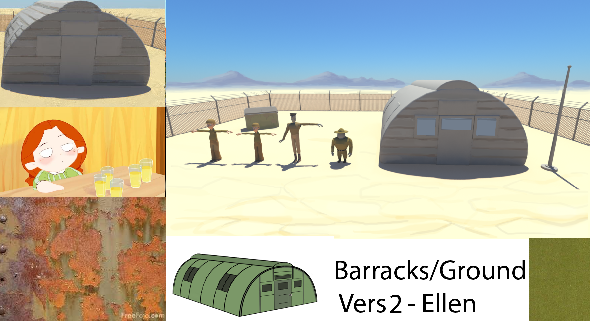
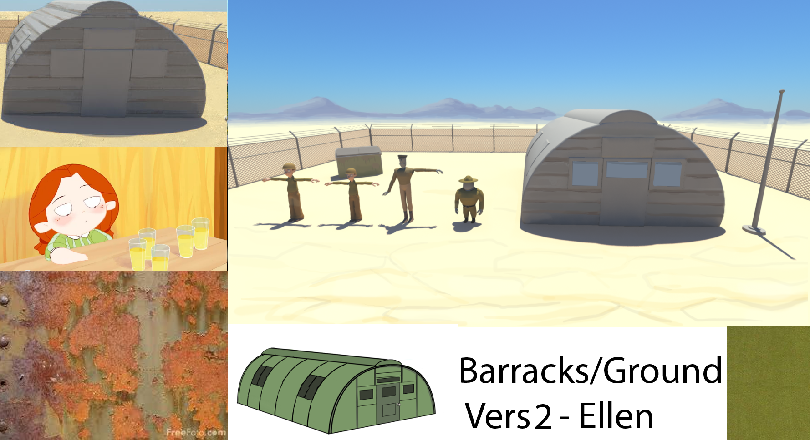

Animated Film + At Ease

I led prop shading and contributed to modeling, concept design, and animation for the animated short At Ease, a product of the University of Washington's animation capstone.
Maya Fundamentals
During the first quarter, we worked on independent projects to gain exposure to the basics of the animation pipeline in Autodesk Maya, including lighting, rigging, modeling, animating, shading, and compositing.

Animation Capstone
We produced the film at the end of the first quarter and for the next 2 quarters. I led the prop shading group to make a consistent look and feel for the whole film. I also contributed to character design, concept art, 3D modeling, and animation.
 
